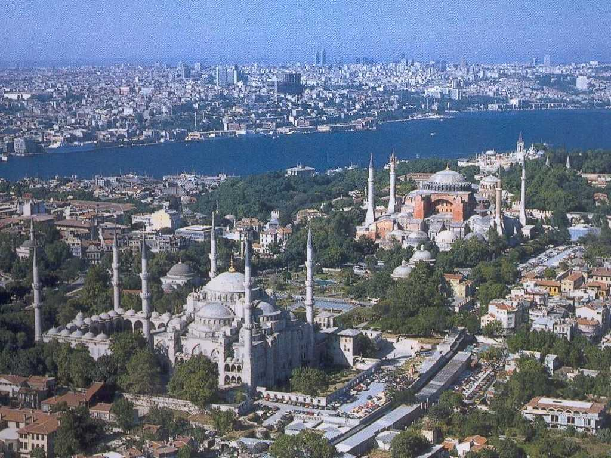
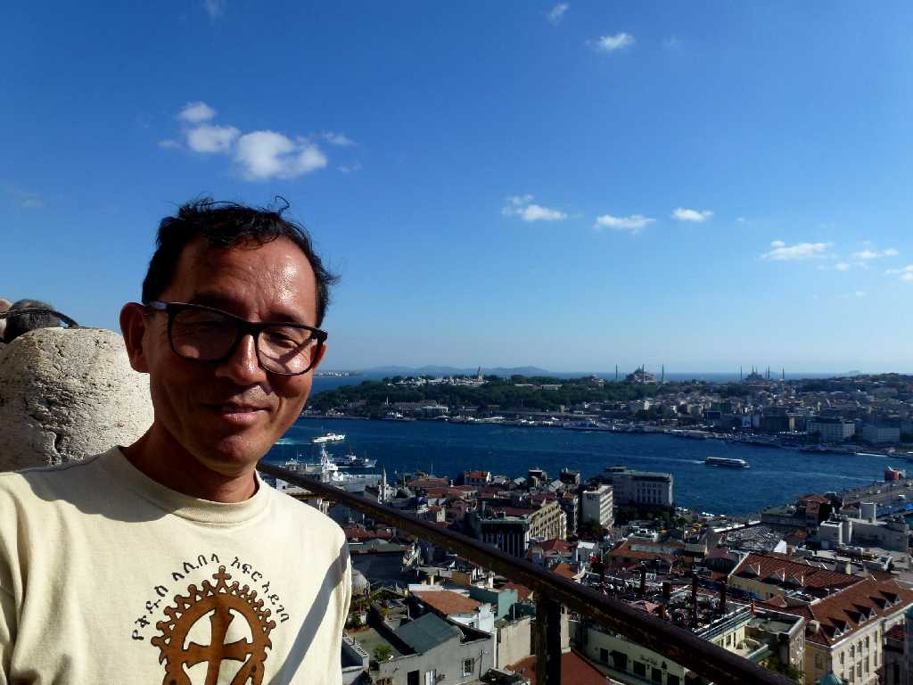

Istanbul
オリエント急行の出発駅はヨーロパへそしてボスポラス海峡をフェリーでウスクダルに渡るとアジアへの出発駅が印象深い


Night view
また東方キリスト教国最大のビザンティン帝国の首都コンスタンティノープルとしてイスラム教国最大のオスマン帝国の首都イスタンブールとして栄えた遺産が残る文明の十字路の街でもある

September 28 2011 View from Galata Kulesi Istanbul
トルコ７,３００ｋｍバスの旅でイスタンブールは約３０年ぶりの再訪問